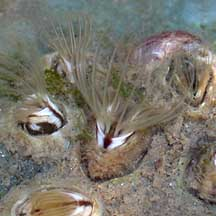
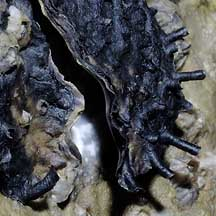

|
|
| Limpet
or barnacle? How to tell them apart? updated Mar 2020 Conical shells on the rocks These kinds of animals are often mistaken for one another. They have conical shells and are found on hard surfaces such as rocks and seawalls. See also animals with hard coiling shells found on rocks. |
 |
 |
 |
| Barnacles don't move once they settle down as a tiny larvae on their chosen surface. | Limpets can move around on their broad foot. | Oysters don't move once they settle down as a tiny larvae on their chosen surface. |
| There is a hole at the top of the hard shell. | Some limpets have holes at the top of the hard shell, others do not. The hole is not closed by plates. | Oysters have a two-part shell (i.e., two valves) like other clams. One valve is stuck to the rock. There is a gap between the valves. |
| At low tide, the hole at the top of the shell is tightly closed by a pair of plates to reduce water loss. | At low tide, they usually tightly clamp down against the surface and are difficult to dislodge. | At low tide, the valves are tightly shut to reduce water loss. |
|
 |
 |
 |
| At high tide, barnacles open their plates and stick out feathery feet to gather edible bits from the water. | At high tide, limpets wander about on the hard surface feeding on algae, rasping this off with their rough little tongues. This usually leaves an area of bare rock around a limpet. | At high tide, the valves open slightly and the animal sucks in sea water to filter out edible titbits. |
| More comparisons |
 Slipper snails are gastropods with thick chalky shells that settle inside shells occupied by hermit crabs. |


 Jingle shells are bivalves with thin lustrous shells that settle on mangrove tree leaves and trunks. |


| how to tell apart different kinds of limpets |